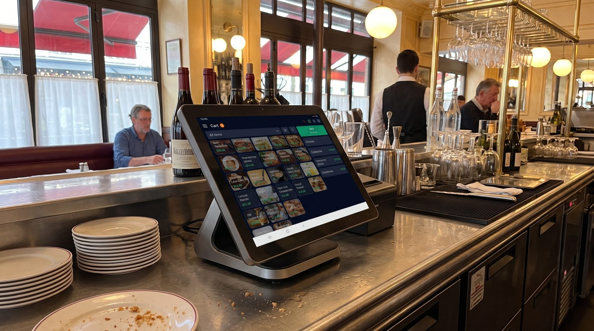

Logiciel de caisse caviste : le guide 2026 pour bien choisir
Tenir une cave à vin, ce n'est pas vendre des produits interchangeables. C'est jongler entre des centaines de références, des millésimes qui changent chaque année, des formats multiples, une clientèle qui veut du conseil et une réglementation stricte sur l'alcool. Un logiciel de caisse caviste ne se choisit donc pas comme une caisse de boulangerie : il doit comprendre votre métier. Voici comment trier les solutions, et pourquoi une caisse souple et conforme change la vie au comptoir.

Pourquoi une caisse de caviste n'est pas une caisse comme les autres
Sur le papier, encaisser une bouteille ressemble à n'importe quelle vente. Dans la réalité, le métier de caviste cumule des contraintes que la plupart des caisses généralistes ne savent pas gérer. Avant de comparer les éditeurs, il faut clarifier ce dont une cave a réellement besoin.
Une gestion fine des références et des millésimes
Un même vin existe en plusieurs millésimes, et chaque millésime se vend, se réassortit et se valorise différemment. Votre caisse doit donc traiter le domaine, l'appellation, le cépage, la couleur, le degré, le format et le millésime comme des attributs structurés — pas comme un simple libellé tapé à la main. C'est la seule façon de savoir, en un coup d'œil, qu'il vous reste trois bouteilles du Châteauneuf 2019 et plus aucune du 2020.
La vente à l'unité comme au carton
Le client repart parfois avec une seule quille, parfois avec un carton de six ou de douze, parfois avec un magnum. Une caisse adaptée gère plusieurs conditionnements pour une même référence, décrémente le stock selon le format vendu et applique un éventuel tarif dégressif au carton, sans que vous ayez à créer trois fiches produit distinctes.
Du conseil, des fiches produit et de la fidélité
Le caviste vend autant son expertise que ses bouteilles. Des fiches produit riches (accords mets-vins, notes de dégustation, garde optimale) aident le vendeur à conseiller et nourrissent une éventuelle boutique en ligne. Côté clientèle, un bon programme de fidélité et un historique d'achats permettent de rappeler à un habitué le vin qu'il avait adoré l'an dernier.
L'omnicanal : click & collect et e-commerce
De plus en plus de caves vendent aussi en ligne, en livraison locale ou en click & collect. L'enjeu est d'éviter de vendre deux fois la même bouteille : le stock du magasin et celui du site doivent être synchronisés en temps réel.
Les événements : dégustations et ventes spéciales
Dégustations, foires aux vins, salons, paniers de fin d'année, ventes privées : l'activité d'un caviste vit au rythme d'événements ponctuels. La caisse doit suivre ces ventes événementielles, parfois hors les murs, et continuer de fonctionner même sans connexion fiable sur un stand.
Les 7 critères pour choisir son logiciel de caisse caviste
Une fois les besoins posés, voici la grille que nous recommandons d'appliquer à chaque solution envisagée :
- Gestion fine du stock et des références : variantes par millésime, format et domaine, alertes de réassort, inventaire rapide.
- Multi-conditionnement : vente à l'unité, au carton, au magnum, avec décompte de stock cohérent.
- Fiches produit et conseil : attributs vin détaillés, accords, notes, exportables vers une vitrine en ligne.
- Omnicanal : e-commerce et/ou click & collect avec stock synchronisé.
- Fidélité et CRM : historique d'achats, cartes de fidélité, ventes événementielles.
- Mode hors ligne : encaissement possible sur un stand de dégustation ou en cas de coupure réseau.
- Conformité : certification NF525, prête pour la facturation électronique, gestion correcte de la TVA sur l'alcool.
Le bon réflexe : ne vous laissez pas séduire par une démo léchée. Listez vos 200 références les plus typiques et demandez à l'éditeur de montrer comment elles se gèrent au quotidien.
Notre solution recommandée pour les cavistes
Parmi les approches du marché, celles qui combinent une gestion fine du stock, la souplesse des conditionnements et une vraie conformité sortent du lot. C'est sur ces critères que nous mettons en avant la solution suivante.
digabloPos
digabloPos coche les cases qui comptent vraiment pour une cave. Le plan de base est gratuit à vie (sans date limite, sans carte bancaire), et la gestion du stock est assez fine pour suivre vos références par millésime, domaine et format. On encaisse à l'unité comme au carton, on continue de vendre même sans Internet sur un stand de dégustation, et on ajoute des modules (e-commerce, fidélité, click & collect) seulement quand le besoin apparaît. Le tout est certifié NF525 et prêt pour la facturation électronique — deux points non négociables pour un commerce qui vend de l'alcool.
👍 Points forts
- Gratuit à vie, sans engagement
- Gestion fine des stocks et des références (millésimes, formats, domaines)
- Mode hors ligne avec synchronisation automatique
- Modules à la carte, on ne paie que l'utile
- Certifiée NF525
- Prête pour la facturation électronique
- Gestion des ardoises / crédit client
👎 À noter
- Marque plus récente que certains spécialistes historiques du vin
- Certains modules avancés sont payants
Envie de tester sur vos propres références ?
Le plan de base est gratuit à vie, prêt en quelques minutes, sans carte bancaire. Importez vos vins et voyez si la gestion des millésimes vous convient.
Essayer digabloPos gratuitementTableau comparatif des fonctions attendues
Voici les fonctions que nous jugeons indispensables pour une cave à vin, et le niveau d'exigence à avoir. Utilisez ce tableau comme une check-list face à n'importe quel éditeur.
| Fonction | Niveau attendu pour un caviste | Pourquoi c'est important |
|---|---|---|
| Variantes par millésime / format | Indispensable | Suivre chaque cuvée comme une référence distincte |
| Vente à l'unité et au carton | Indispensable | Conditionnements multiples, stock cohérent |
| Fiches produit détaillées | Important | Conseil au comptoir et fiches e-commerce |
| Click & collect / e-commerce | Selon activité | Stock magasin et web synchronisés |
| Fidélité & historique client | Important | Fidéliser et personnaliser le conseil |
| Mode hors ligne | Indispensable | Dégustations, salons, coupures réseau |
| Certification NF525 | Obligatoire | Conformité anti-fraude TVA |
| Facturation électronique | À anticiper | Ventes aux pros (CHR, entreprises) |
Les fonctionnalités et tarifs des éditeurs évoluent et varient selon les offres : vérifiez toujours les détails sur leurs sites officiels avant de choisir. Cette grille est un repère métier, pas un classement de marques.
TVA sur l'alcool, NF525 et facturation électronique
Vendre du vin et des spiritueux implique des obligations particulières. Trois points méritent votre attention avant de signer pour une caisse.
La certification NF525, un prérequis
Comme tout commerce assujetti à la TVA qui encaisse des particuliers, un caviste doit utiliser un logiciel de caisse garantissant l'inaltérabilité, la sécurisation, la conservation et l'archivage des données de vente. La certification NF525, ou à défaut une attestation individuelle de l'éditeur, prouve cette conformité. Choisir une caisse non certifiée vous expose en cas de contrôle.
La TVA, la bonne ventilation
Les boissons alcoolisées relèvent de taux de TVA spécifiques, distincts de certains produits d'épicerie que vous vendez peut-être aussi (chocolats, épicerie fine, accessoires). Votre caisse doit permettre d'affecter le bon taux à chaque famille de produits et d'éditer des rapports clairs pour votre comptable. Une mauvaise ventilation, c'est des heures perdues en fin de mois.
La facturation électronique, à anticiper
Beaucoup de cavistes vendent aussi à des professionnels : restaurants, bars, comités d'entreprise, cadeaux d'affaires. La généralisation de la facturation électronique entre entreprises rend précieux le fait de choisir, dès maintenant, une caisse déjà prête pour ce cadre. Vous éviterez une migration douloureuse plus tard.
Questions fréquentes
Un logiciel de caisse pour caviste doit-il être certifié NF525 ?
Oui. En tant que commerce assujetti à la TVA qui encaisse une clientèle de particuliers, un caviste doit utiliser un logiciel garantissant l'inaltérabilité, la sécurisation, la conservation et l'archivage des données. La certification NF525, ou une attestation individuelle de l'éditeur, atteste de cette conformité.
Comment gérer la vente à l'unité et au carton dans la même caisse ?
Une caisse adaptée gère plusieurs conditionnements pour une même référence : bouteille seule, carton de 6 ou de 12, magnum. Le stock se décrémente automatiquement selon le format vendu, et vous pouvez appliquer un prix dégressif au carton sans recréer le produit.
Peut-on suivre les millésimes et les domaines avec un logiciel de caisse ?
Oui, à condition de choisir une solution qui gère des fiches produit détaillées avec variantes : domaine, appellation, cépage, millésime, couleur, degré et format. Chaque millésime est alors suivi comme une référence distincte en stock, ce qui évite les ruptures sur vos cuvées les plus demandées.
Le logiciel de caisse gère-t-il le click & collect et la vente en ligne ?
Les solutions modernes synchronisent le stock de la boutique avec une vitrine en ligne ou un module de click & collect. La bouteille vendue en magasin n'apparaît plus disponible sur le web, ce qui évite de vendre deux fois la même quille.
Combien coûte un logiciel de caisse pour cave à vin ?
Les prix varient fortement, de l'abonnement mensuel par boutique jusqu'à des offres avec plan de base gratuit. L'essentiel est de comparer le coût réel sur douze mois, modules inclus, et de vérifier ce qui est compris dès le départ (gestion fine du stock, fidélité, conformité).
Prêt à équiper votre cave ?
Installez une caisse pensée pour les cavistes en quelques minutes, sans engagement ni carte bancaire, et gardez la main sur vos millésimes.
Créer ma caisse gratuite